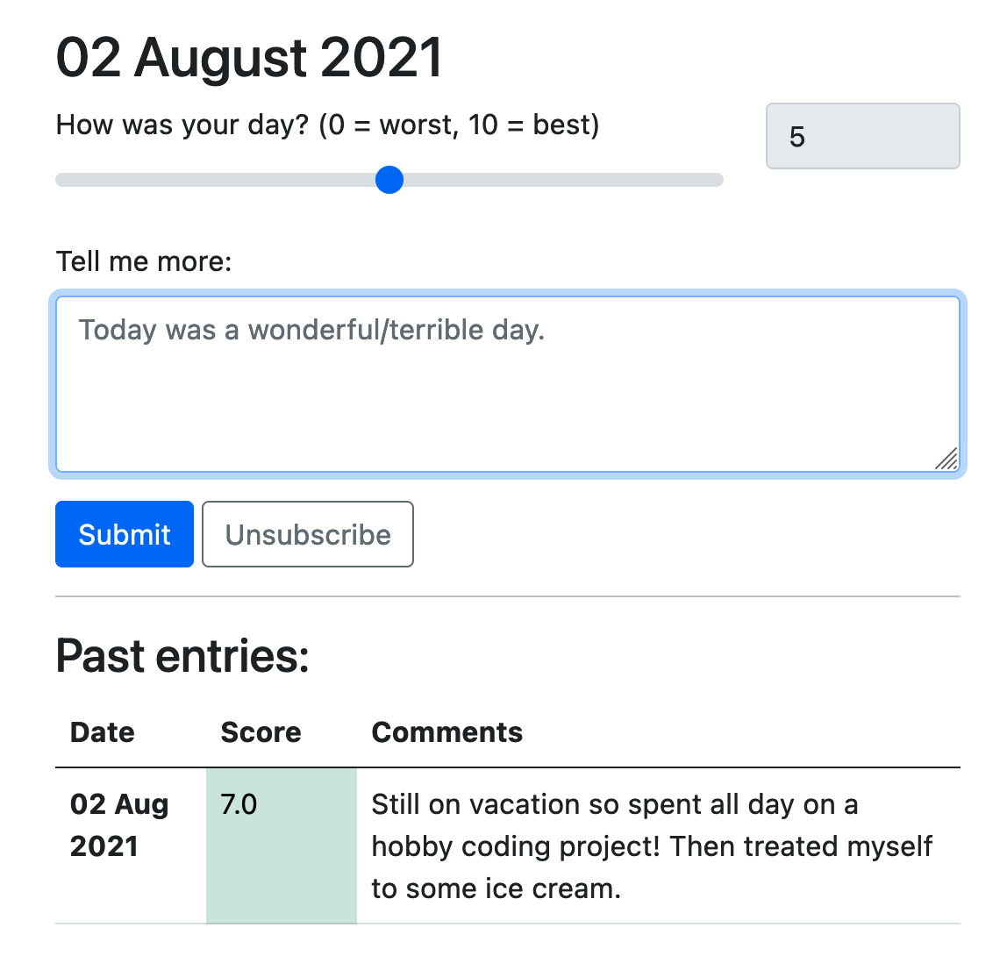

foxtrot: a web-based mental health tracker
The problem: it’s easy to lose track of ourselves.
- Stress, anxiety, or depression make it harder to be self-aware.
- But self-awareness is the key to mental health.
The solution: daily text reminders to check-in.
- Each text has a link to a unique URL where you can log how you feel that day and view past entries.
- Unsubscribe at any time.

Privacy
- The only identifying information we collect is your phone number.
- Your log is stored at a unique URL that is sent to you by text.
A work in progress
- Project Foxtrot is open source and hosted on GitHub.
- Suggestions and improvements are welcome.
Convinced? Return to
home and subscribe.